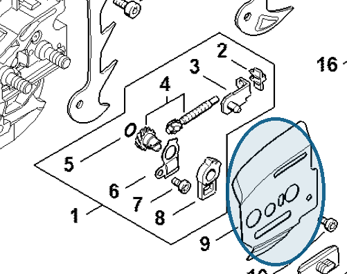

Inner side plate
1141 664 1030
MS 261 — guide bar
Inner side plate between the crankcase and guide bar.
Item 9 Qty listed: 1

MS 261 C-M spare-parts list, 10/02/2023. Drawing p. 15; parts table p. 16.
1141 664 1030
Inner side plate between the crankcase and guide bar.
Item 9 Qty listed: 1

MS 261 C-M spare-parts list, 10/02/2023. Drawing p. 15; parts table p. 16.